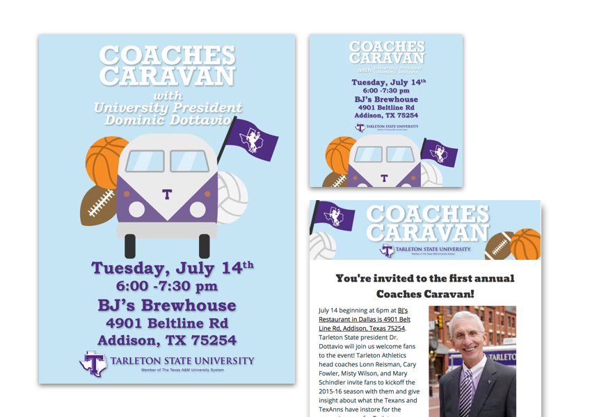
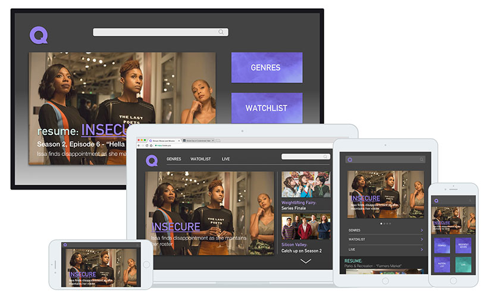
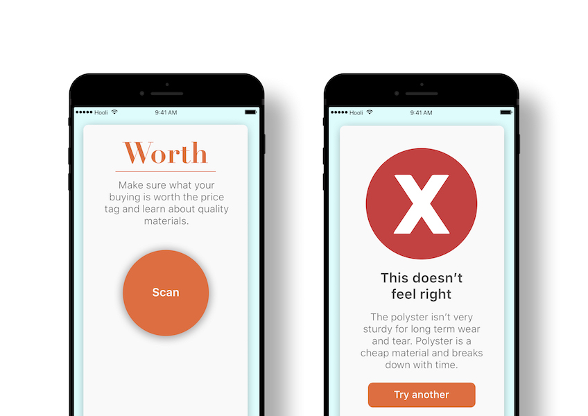

<!--[BODY - content]-->
<section class="row content-body flex part-container">
  <div class="col-md-12">
    <h2 class="content-title">Projects</h2>
    <span><a class="text-link" href="https://www.behance.net/user/?username=silviafuen">My portfolio of graphics on Behance &raquo;</a></span>
    <br>
    <span><a class="text-link" href="https://github.com/silviafuen">My projects on Github &raquo;</a></span>
    <!--[PROJECT 1 - Valay Interface Mockups]-->
    <div class="row">
      <div class="col-md-7 content-div">
        <a class="" href="https://itunes.apple.com/us/app/valay-contractor/id1285856800?mt=8"></a>
        <!--<div id="carouselExampleControls" class="carousel slide" data-ride="carousel">
        <div class="carousel-inner">
          <div class="carousel-item active">
            
          </div>
          <div class="carousel-item">
            
          </div>
          <div class="carousel-item">
            
          </div>
        </div>
        <a class="carousel-control-prev" href="#carouselExampleControls" role="button" data-slide="prev">
          <span class="carousel-control-prev-icon" aria-hidden="true"></span>
          <span class="sr-only">Previous</span>
        </a>
        <a class="carousel-control-next" href="#carouselExampleControls" role="button" data-slide="next">
          <span class="carousel-control-next-icon" aria-hidden="true"></span>
          <span class="sr-only">Next</span>
        </a>
      </div>-->
      </div>
      <div class="col-md-5 content-div">
        <h3>Valay Contractor App</h3>
        <em> Mobile iOS Interface</em>
        <p>
          One of my final projects on the Valay team was to design their contractor Mobile iOS app from the initial version that had been designed by a developer. The main focus was to develop something that flowed better and faster for a contractor while also
          matching the brand identity but contrasted the main client app.</p>
        <p>
          My approach was to keep the interface structure similar to that of the main app and make my primary changes in the color scheme. I used a lighter color scheme for the layout and kept the interactive elements and prompts that were familiar to app users.
          <a class="text-link" href="https://itunes.apple.com/us/app/valay-contractor/id1285856800?mt=8">
            It's available right now on the iTunes store</a> for the group of contractors the Valay team is testing.
        </p>
      </div>
    </div>
    <!--[PROJECT 2 - Current Students Responsive]-->
    <div class="row part2">
      <div class="col-md-7 content-div">
        <a class="" href="https://www.tarleton.edu/currentstudents">
          
        </a>
      </div>
      <div class="col-md-5 content-div">
        <h3>Current Students Redesign</h3>
        <em>Responsive Design</em>
        <p>
          As a secondary homepage for students on campus, this page received a lot of traffic but very high bounce and click away rate. We needed to identify and find a way to differentiate it from the main site home page while also providing students the resources
          they already received from it.
        </p>
        <p>
          Primarily we focused on the content that would be removed and added to the page. Getting feedback from our students on what they wanted from their own homepage and what they found most valuable to them on the page. In the end, we developed a weekly article
          with up to date news and a slideshow panel with notices and reminders to students about campus events. In addition, we added in social media panel and student testimonials on the page, showcasing the highlights of campus.<br>
          <a class="text-link" href="https://www.tarleton.edu/currentstudents">
            Check out the live site students now use.
          </a>
        </p>
      </div>
    </div>
    <div id="more"> </div>
    <!--[PROJECT 3 - Q Streaming App Device Mockups]-->
    <div class="row part3">
      <div class="col-md-7 content-div">
        
      </div>
      <div class="col-md-5 content-div">
        <h3>Queue - Streaming App</h3>
        <em>Responsive Design</em>
        <p>
          As a part of the Daily UI Challenge, this was a simple design a streaming app prompt. I wanted to make it a bit more of a challenge and added in requirements of creating a homepage interface for multiple devices, that would be familiar to the user and
          follow the brand identity.
        </p>
        <p>
          After identifying the key items in order of importance required for a streaming app homepage, I used that in designing large to small screens. Condensing elements as the screen sign lessened. In the end, each screen contained similar stylistic elements,
          but condensed enough to where a user was still familiar and could maneuver around as they would their regular viewing device.
        </p>
      </div>
    </div>
    <!--[PROJECT 4 - Worth It Prototype]-->
    <div class="row part4">
      <div class="col-md-7 content-div">
        <a class="" href="https://invis.io/U2F420VHY#/270925517_App-Loading_0-0">
          
        </a>
      </div>
      <div class="col-md-5 content-div">
        <h3>Worth - Mobile App</h3>
        <em>Mobile Prototyping</em>
        <p>
          A personal side project, I've been playing around with. The goal of Worth is to identify clothing products that are worth the price tag For it to be most effective for users, it needed to be easy to use, quick for in the moment shopping and put into simple
          terms.
        </p>
        <p>
          Within a few wireframes, it was clear that the process needed to be as hands-off as possible and have a flow that was natural and familiar to users. I took inspiration from Shazam, in designing the layout, one click, action(photo of tag), results. Each
          window allows the user to pull out of a session, by pulling the card down or continue the cycle after a session. I'm still testing it out and playing around with the idea.
          <a class="text-link" href="https://invis.io/U2F420VHY#/270925517_App-Loading_0-0">
          Check out the prototype on InVision and leave me some feedback.
          </a>
        </p>
      </div>
    </div>
    <!--[PROJECT 5 - Coaches Caravan Marketing Campaign]-->
    <div class="row part5">
      <div class="col-md-7 content-div">
        
      </div>
      <div class="col-md-5 content-div">
        <h3>Coaches Caravan</h3>
        <em>Marketing Campaign</em>
        <p>
          A client project that had a combined audience of the sports enthusiast, students, and alumni. We were needing to develop a digital marketing elements that were to be shared via social media, web, and email. As a university-sponsored event, it required
          following the brand identity and guidelines as well.
        </p>
        <p>
          The final result was graphics that ranged from vertical, square, horizontal and email heading. Each one kept the important visual pieces that suited the theme and aligned with brand guidelines.
        </p>
      </div>
    </div>
    <!--[More Projects link]-->
    <div class="row part6">
      <div class="col-md-12 content-div">
        <h3>More Projects</h3>
        <span><a class="text-link" href="https://www.behance.net/user/?username=silviafuen">My portfolio of graphics on Behance &raquo;</a></span>
        <br>
        <span><a class="text-link" href="https://github.com/silviafuen">My projects on Github &raquo;</a></span>
      </div>
    </div>
    <!--[PROJECT 6 - Lyric Translation JS Prototype]
      <div class="row part6">
        <div class="col-md-7 content-div">
          
        </div>
        <div class="col-md-5 content-div">
          <h3>Music Translator</h3>
          <em>JS Prototyping</em>
          <p>
            Computers have become ubiquitous in almost every facet of our lives. At work, desk jockeys spend hours in front of their desktops, while delivery people scan bar codes with handhelds and workers in the field stay in touch with the central office via their
            notebooks.
          </p>
          <p> At home, we rely on our desktops and notebooks to do our shopping, to entertain us, and to keep us abreast of world events. We may not see our email servers, but we count on them to deliver our email whenever and wherever we want</p>
        </div>
      </div>
      --->
  </div>
</section>
